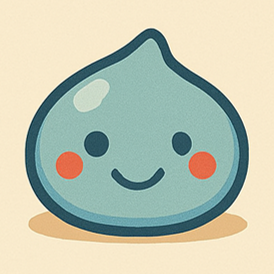

🌱 社会人力基礎力ブース
診断系
社会人基礎力を自己チェック
チェックする
📓 学習と成長ラボブース
診断系
職場の心理的安全性と挑戦を見える化
診断する
🧮 離職コスト計算ブース
計算系
離職コストを数字で見える化する
計算する
✎ 〇×問題ブース
学習系
社内教育コンテンツに応用できます
挑戦する
✡ タロット占いブース ✡
エンタメ系
占いでちょっと息抜きしませんか？
占ってみる
※モラールサーベイ1、モラールサーベイ2については、別途開発中のExcel版モラールサーベイツールの一部を体験できるものを予定しています。
🤖 モニター募集ブース
ご自身のHPに上記WEBアプリを実装してみるモニターに参加しませんか？
WEBアプリ画面に、ご自身のロゴマークやHPへのリンクを入れることで、差別化やブランディング効果が期待できます。
【無料モニター募集：3枠】
- WEBアプリを無料で実装して顧客接点をつくる効果があるかどうかご確認ください
- 想定しているモニター期間は2カ月程度です（効果が出るまでに時間がかかると想定）
- 当HPについて拡散をしていただけるとありがたいです（多くのフィードバックを得るため）
- モニター体験後、簡単なアンケートで感想や改善点をフィードバックをお願いします
- また、モニター体験後、希望する方には導入や相談の窓口もご案内させていただきます
開発者プロフィール

駆け出しWEBデザイナー：管理人あるく
＜ 私が提供できる3つの価値 ＞
- 顧客心理・顧客導線を意図したLP制作（HTML+CSS+JavaScript）
- 顧客接点をつくるためのWEBアプリ／Excelツールの企画・設計・実装
- Xとnoteを連携した「フロー×ストック」によるWEBマーケティング
AI活用によるJavaScriptの学習記録『あるく戦記』をnoteにて連載中
※note開始3カ月でフォロワー1000&エンゲージメント率30%以上達成!